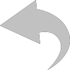

<!DOCTYPE html>
<html>
<head>
	<meta charset="UTF-8">
	<link rel="stylesheet" href="css/normalize.css">
	<link rel="stylesheet" href="css/main.css">
	<script src="https://cdnjs.cloudflare.com/ajax/libs/react/0.14.7/react.js"></script>
    <script src="https://cdnjs.cloudflare.com/ajax/libs/react/0.14.7/react-dom.js"></script>
    <script src="https://cdnjs.cloudflare.com/ajax/libs/babel-core/5.8.23/browser.min.js"></script>
    <script src="https://cdnjs.cloudflare.com/ajax/libs/jquery/2.1.1/jquery.min.js"></script>
    <script src="JS/timeago.js" type="text/javascript"></script>
</head>

<body>

	<div id="main-wrapper">

<!-- 		<div id="head-info">
			<div class="wrap1">
				<h2>Average</h2>
				
		  </div>
		  <div class="wrap2">
	      <p>Based on 758 reviews. See some of the reviews here.</p>
	      
      </div>
		</div>

		<div id="reviews-wrapper">
			<div class="review-body">
				<h3 class="name">Jennifer</h3>
				<span>18 hours ago</span>
				<p class="review-name">Enjoying the feedback and constructive recommendations.<p>
				<p class="review-text">A great addition to our online shopping experience to instill confidence in online purchase. Wish there were a few more options added as time of send following an order placed. Would like to view the actual email/products invitation that is sent to each customer. The feedback has allowed us to tighten up our product packaging guidelines for consistency.</p>
			</div>
			<div class="company-reply">
				<div class="reply">
					<span>18 hours ago</span>
					<p class="reply-name">Reply from company</p>
			  </div>
				<p class="reply-text">Hi Jennifer,<br /></br>

					Thank you for your feedback! Just to clarify, you do have control over the delay time to send invites. You can adjust this setting under the Automatic Feedback Service tab in your B2B dashboard. You can read more about customizing templates and setting delay times here: https://support.trustpilot.com/hc/en-us/articles/201751476-How-to-Guide-Customize-Template-for-the-Automatic-Feedback-Service <br /></br>

					If you have any additional questions or concerns, please feel free to visit our support center here: https://support.trustpilot.com/hc/en-us or reach out to our support team at support@trustpilot.com.</br>
					</br>
					Kind Regards,</br>
					Brittany
				</p>
		  </div>
		</div> -->

  </div>

<script type="text/babel" src="JS/reviews.js"></script>

<script> 
	jQuery(document).ready(function() {
	  jQuery("time.timeago").timeago();
	});
</script>


</body>


</html>